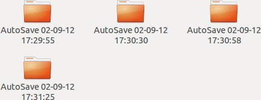

|
L'Auto-sauvegarde :
|
|
L'Auto-sauvegarde, que vous pouvez régler dans le module 'Configuration', permet de sauvegarder
automatiquement les données essentielles sans que vous soyez obliger d'y penser.
|
|
La fréquence de sauvegarde est comprise entre 5 et 50 lancements de Blender3D par configuration. Chaque
configuration contient son propre compteur interne. En cas de nécessité, vous pouvez accéder aux Auto-sauvegardes
directement en vous rendant dans le dossier 'save' situé dans le répertoire de l'add-on, comme ici : (Vous trouverez
la description des fichiers sauvegardés sous la vignette ci-dessous)
|
|

|
-
ShaderToolsApis : il s'sgit de la liste des APIS utilisées par le ShaderTools.
-
ShaderToolsConfigs : il s'agit de votre fichier de configuration.
-
ShaderToolsDatabaseNG : il s'agit de votre base de matériaux (ATTENTION : ici il s'agit du nom par défaut
cela ne veut pas dire que votre fichier aura le même nom. Si vous l'avez appelé 'Toto.sqlite' alors vous aurez ce
fichier à la place de 'ShaderToolsDatabaseNG.sqlite').
-
ShaderToolsLanguages : ce fichier gère les traductions suivant la langue sélectionner dans
le module de 'Configuration' du ShaderTools.
|